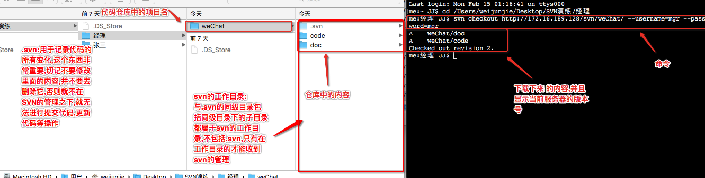
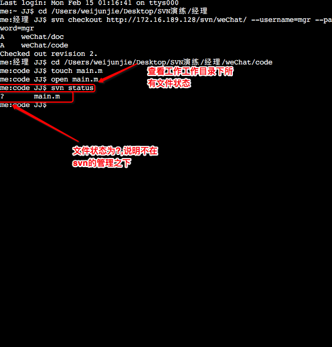
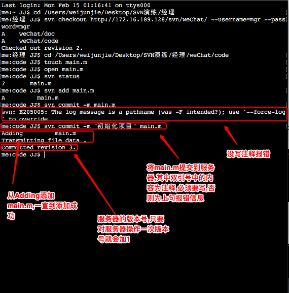
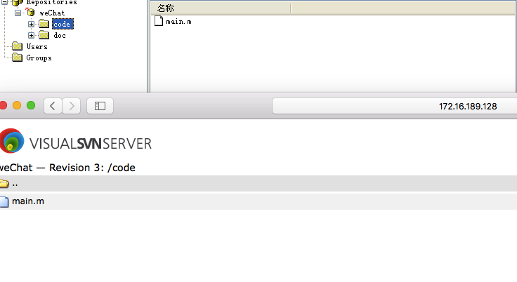
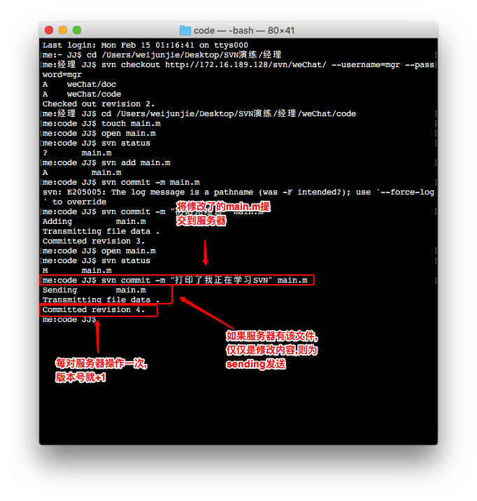
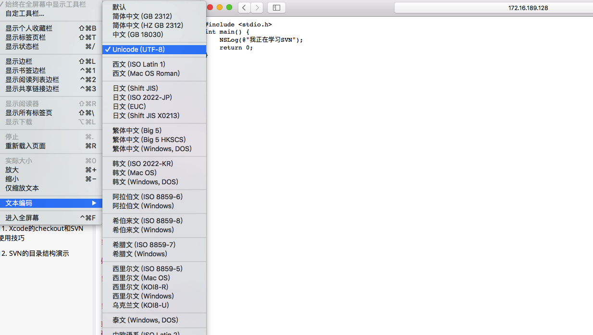

二.项目经理初始化项目1.终端cd进入到经理的文件夹

2.将服务器完整的东西下载到本地,在终端内输入
svn checkout 服务器地址(http://172.16.189.128/svn/weChat/) 用户名和密码(--username=mgr --password=mgr)
3.创建main.m,MAC不支持右键创建文件,所以需要使用终端来进行创建,首先进入到code文件夹中来创建文件在终端内输入
touch main.m

4.创建完之后,通过命令行打开main.m,写一些代码
open main.m

5.现在创建了个main.m,并且main.m里面有一些代码,假如创建完这个文件就代表已经初始化完项目,那么需要把文件提交到服务器以供其他人使用,在提交服务器之前,虽然该文件在svn的工作目录(.svn的同级目录包括同级目录下面的子目录,不包括.svn),但是svn并没有去管理该文件,在终端以下命令查看当前文件状态为?
svn status :查看文件状态(查看该文件是否在svn的管理之下/该文件是否进行了修改而没有提交)
6.总结所有文件状态(描述文件被添加/删除/修改)
1.' '没有修改
2.'A'被添加到本地代码仓库
3.'C' 冲突
4.'D' 被删除
5.'I' 被忽略
6.'M' 被修改
7.'R' 被替换
8,'?' 文件没有被添加到本地版本库内,不在SVN的管理之下
9.'!' 文件丢失或者不完整(不识别该文件)
10.'~' 受控文件被其他文件阻隔
11.'U' 本地有文件的情况下更新最新的代码到本地
12.'G' 产生冲突后,更新操作去解决冲突,相当于进行合并
7.main.m不在svn的管理之下,在终端输入以下命令,将mian.m添加到svn的管理之下
svn add main.m

8.将main.m提交到服务器,在终端输入以下命令
svn commit -m "初始化项目" main.m
9.在浏览器或者SVN服务器(都一样)看下服务器中是否有main.m
10.修改main.m,打开main.m,修改里面的内容
open main.m

11.查看修改后的文件状态为M,被修改了,但是没有提交到服务器
svn status

12.将修改过的main.m提交到服务器
svn commit -m "打印了我正在学习SVN" main.m
13.通过浏览器查看,服务器内的main.m有没有被修改,但是发现是乱码,因为浏览器对中文的支持不是特别好,选择显示->文本编码->UTF-8
14.总结
一.所用到的命令行
1.svn checkout 服务器地址 --username=mgr --password=mgr :将服务器所有内容下载到本地,包含.svn
2.svn status:查看在svn工作目录下的所有文件状态
3.svn add:将svn工作目录下面没有被添加到svn管理之下的文件统统添加进去
4.svn commit -m "注释" 文件名 :将指定文件上传到服务器(注释必须写,文件名如果不写,则将在svn本地版本库中所有没上传到服务器的文件或代码上传到服务器)
5.touch main.m:创建main.m文件
二.注意点补充
1.不要删除.svn文件夹,也不要修改里面的内容,否则就不在svn的管理之下了
2.这节内容中,在公司中常用的命令为svn commit,修改或者添加代码都需要上传到服务器
3.svn checkout只需要做一次就可以了
4.svn add:在开发中当使用xcode创建项目后,创建的文件就被直接添加到svn的管理之下了,相当于做了一次svn add 操作.不过svn add命令当在添加静态库到项目中后还是必须用到的(后面的章节会演示)